Event Details

Event Name: SWASTHYA BORNOMALA
Date: 11th July 2025
Location: Tajpur, Egra, Purba Medinipur, West Bengal
Description: By Gramin Glow Foundation On 11th July, the Gramin Glow Foundation proudly conducted a Health & Hygiene Awareness Program named “SWASTHYA BORNOMALA” for children in Purba Medinipur, West Bengal. This initiative was more than just an event — it was a joyful learning experience designed to plant lifelong habits of cleanliness and self-care among young minds. 🌟 What We Did Through fun-filled sessions using: 📽️ Bengali cartoon videos like Dusto Jibanu, Sisimpur Handwashing, and Peppa Pig Hand Wash 🧼 Demonstrations on proper handwashing and toothbrushing 🧠 Interactive quizzes with small prizes 🎨 Engaging presentations with emojis, animation, and local language content we were able to teach the children: What germs are How they spread The importance of hand hygiene, daily bathing, clean food, and safe habits 💡 Why It Matters Many children in rural and under-resourced areas don’t receive proper education on basic hygiene. This leads to preventable diseases, poor attendance in school, and long-term health issues.
Contact: graminglowfoundation2025@gmail.com | +91 9046927764
Event Gallery
 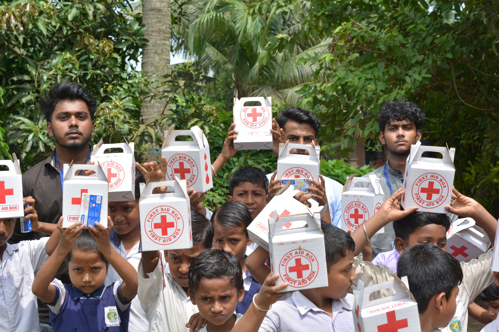
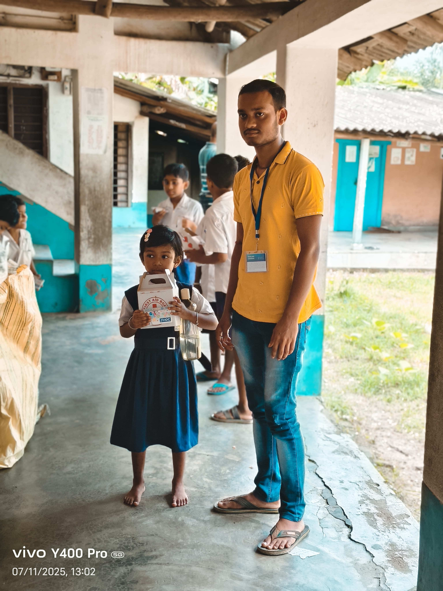
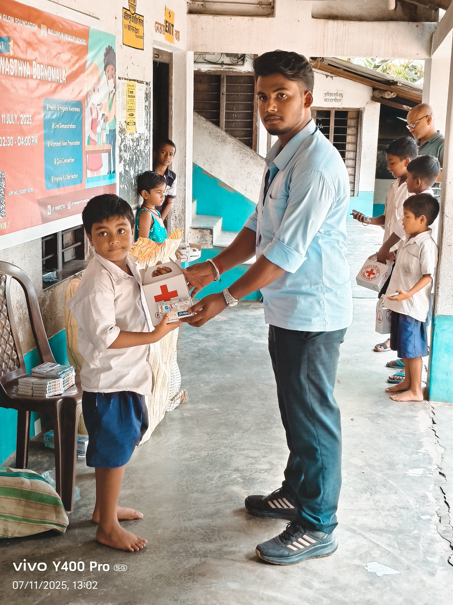
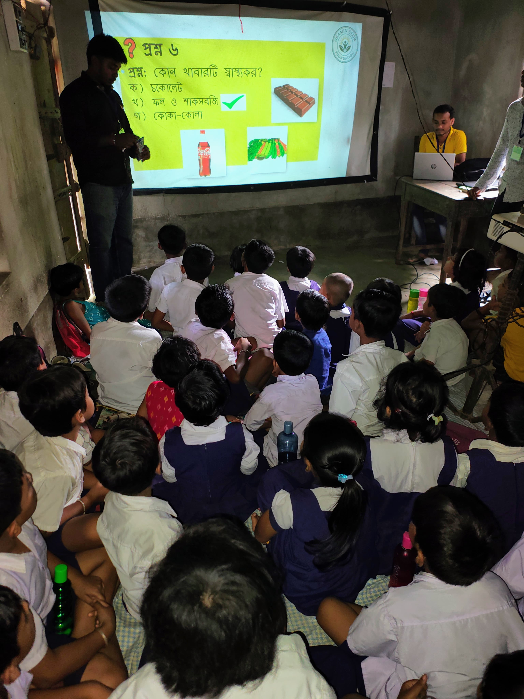
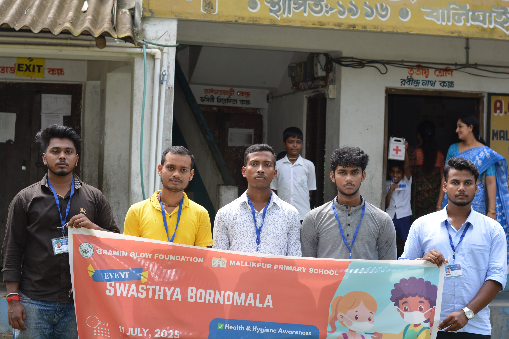
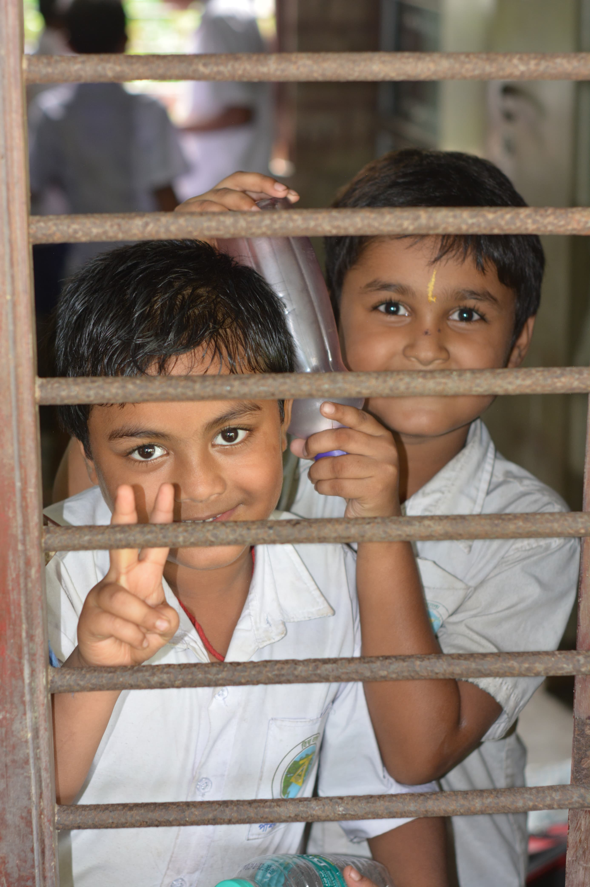
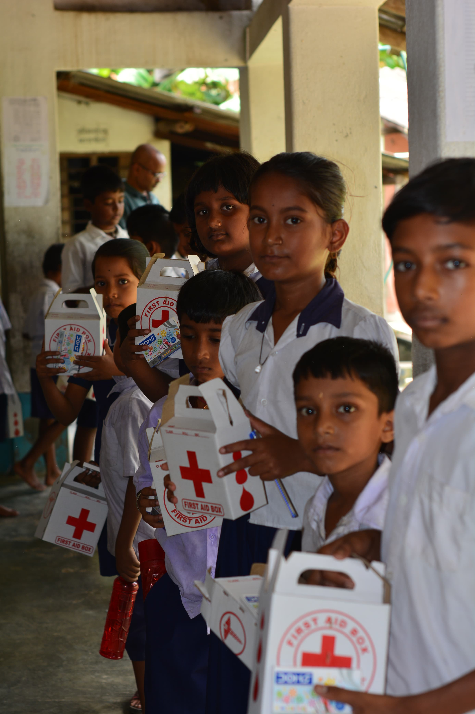
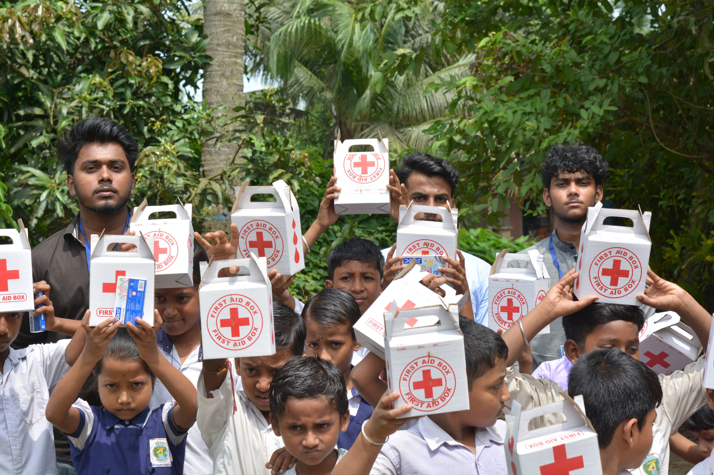
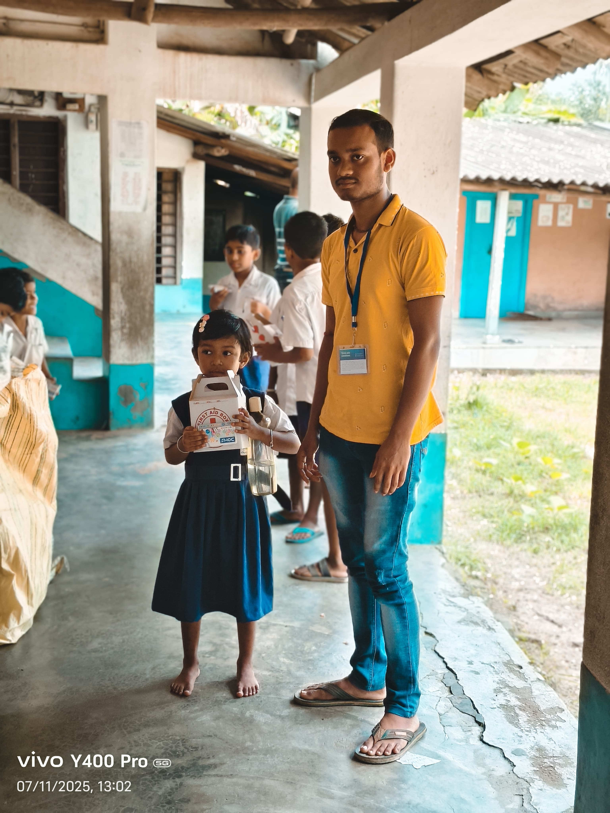
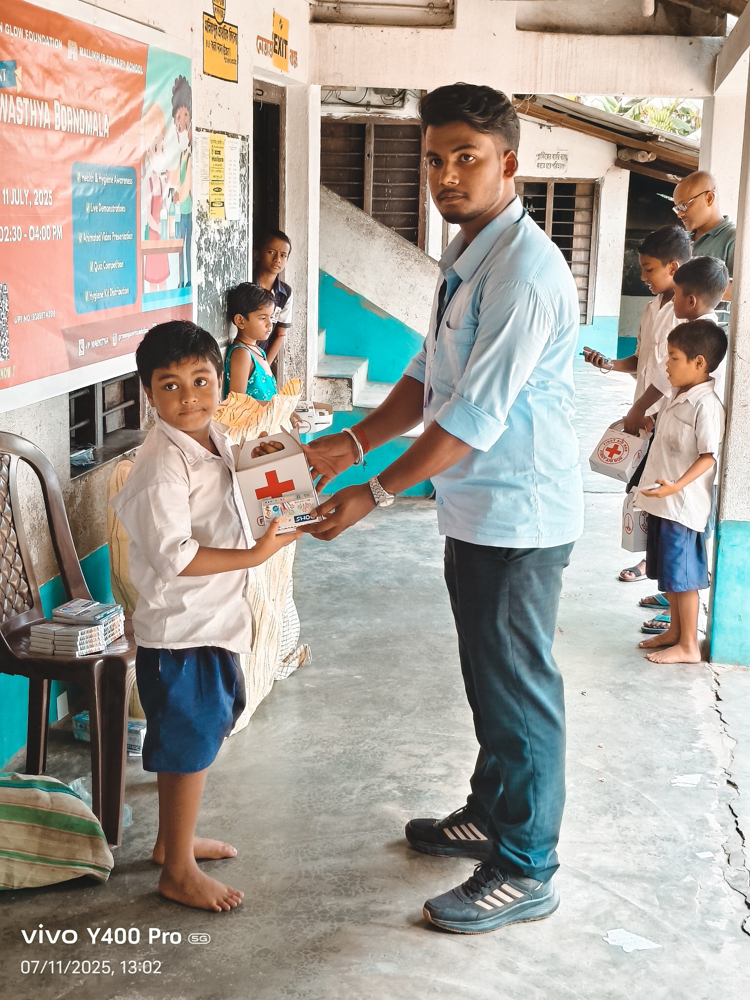
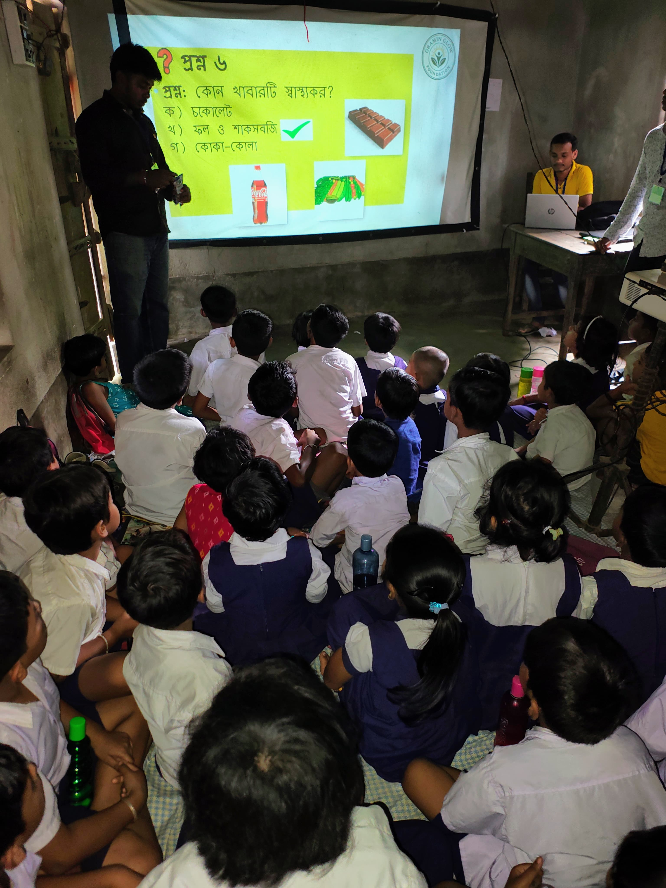
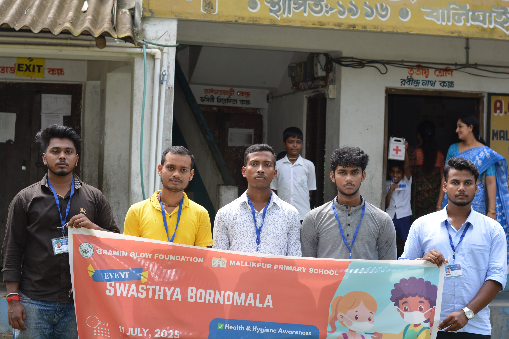
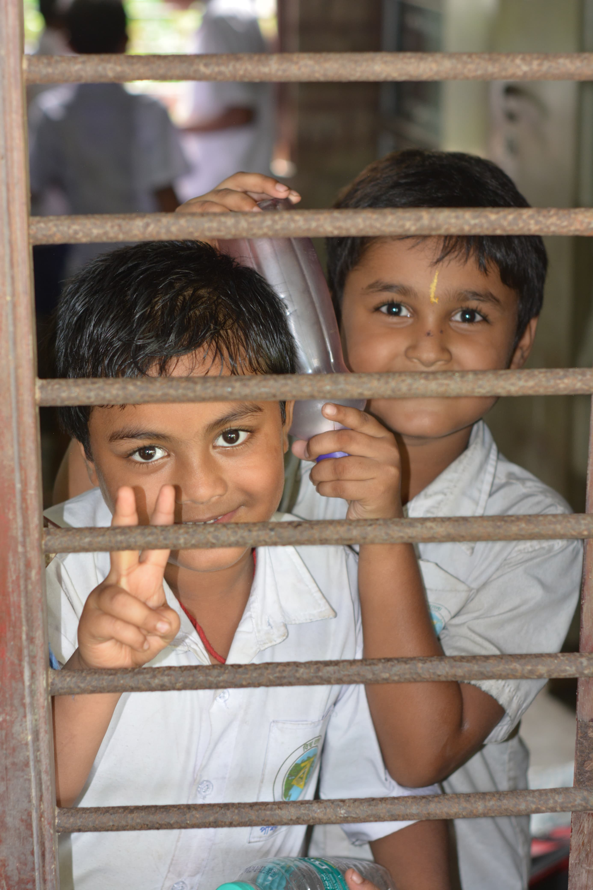
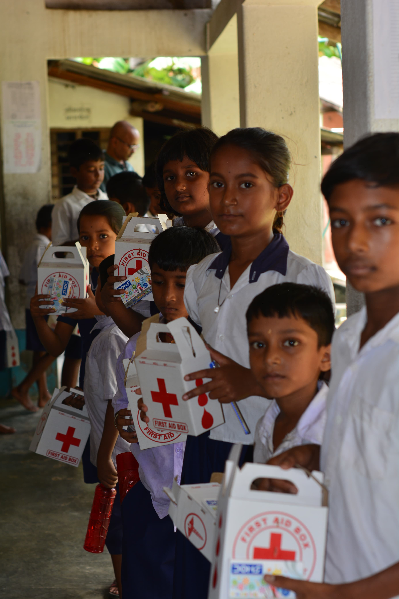